The Story ストーリー
See the Sun partnered with KOJI FIZZ — a prebiotic drink developed by Morinaga & Company — to promote the product through authentic creative endorsement. Rather than running a traditional advertising campaign, they wanted something more genuine: to capture how the product actually influenced real creative professionals in their daily work environments. See the SunはKOJI FIZZ（森永乳業が開発したプレバイオティクスドリンク）と提携し、本物のクリエイティブな支持を通じて製品を宣伝しようとしていました。従来の広告キャンペーンではなく、もっと本物の何かを求めていました：実際のクリエイティブプロフェッショナルの日常の仕事環境で、製品がどのように影響を与えているかを捉えること。
I was brought in to produce and direct the creative vision. The idea was straightforward: go to the people. Visit New York-based designers and artists in their own studios and offices, sit down with them, and let them tell their stories on camera. No scripts, no staged settings — just the real texture of creative life in the city. クリエイティブビジョンのプロデュースとディレクションのために声がかかりました。アイデアはシンプルでした：人々のもとへ行く。ニューヨークを拠点とするデザイナーやアーティストを彼ら自身のスタジオやオフィスに訪ね、座って、カメラの前で語ってもらう。台本なし、演出されたセッティングなし — ただ都市のクリエイティブな生活のリアルな質感だけ。
What I Made 制作したもの
I produced a series of short documentary films featuring interviews with New York-based creative professionals. I conceptualized the interview format, scouted and coordinated on-location filming across multiple studios and workspaces, and managed the entire production team — including film director T.J. Misny and translator Mai Oyama. Each film was shot entirely on location, capturing the authentic atmosphere of each subject's working environment. ニューヨーク在住のクリエイティブプロフェッショナルへのインタビューを収めた短編ドキュメンタリーシリーズを制作しました。インタビュー形式のコンセプト立案、複数のスタジオやワークスペースでのロケハンと撮影コーディネート、そしてフィルムディレクターのT.J. Misnyやトランスレーターの大山麻衣を含む制作チーム全体のマネジメントを担当。各作品はすべてロケで撮影し、それぞれの被写体の仕事環境の本物の雰囲気を捉えました。
The series exceeded the client's expectations and became central to KOJI FIZZ's brand promotion strategy — a genuine portrait of creativity in New York, anchored by a product that supports the creative mind. シリーズはクライアントの期待を超え、KOJI FIZZのブランドプロモーション戦略の中核となりました — クリエイティブな思考を支える製品を軸にした、ニューヨークの創造性の本物のポートレート。
Films — KOJI FIZZ New York Edition 映像作品 — KOJI FIZZ ニューヨーク・エディション
Outcomes 成果
On Location — New York Creatives ロケーション — ニューヨークのクリエイター
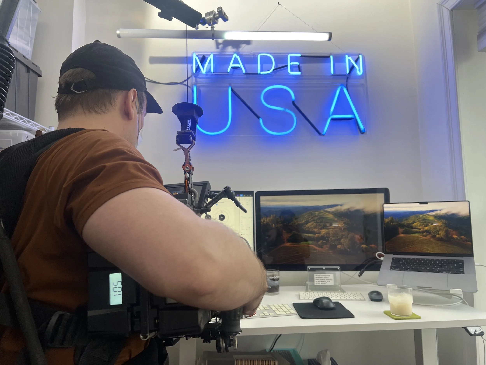
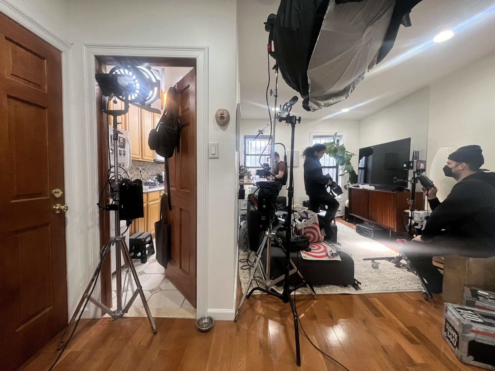
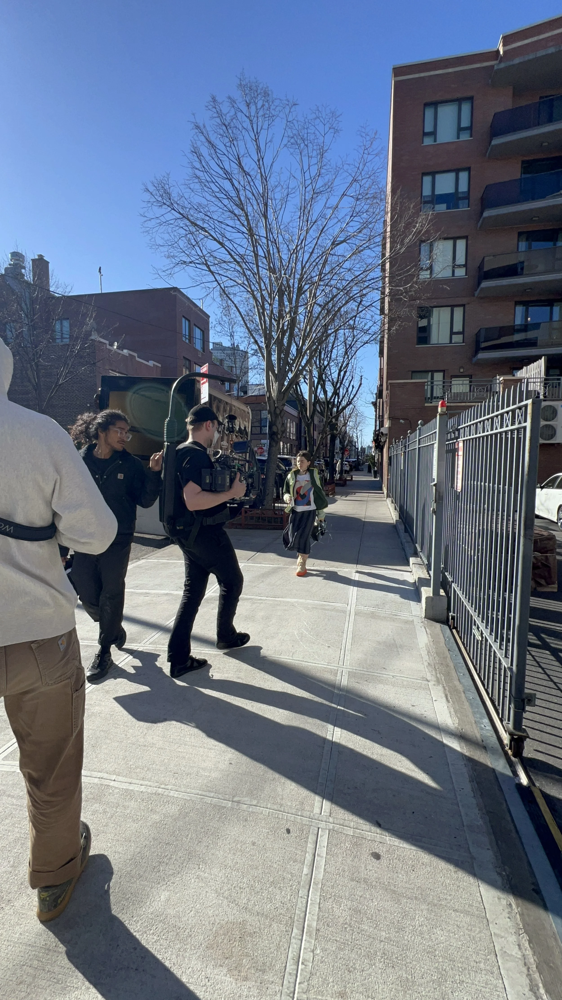
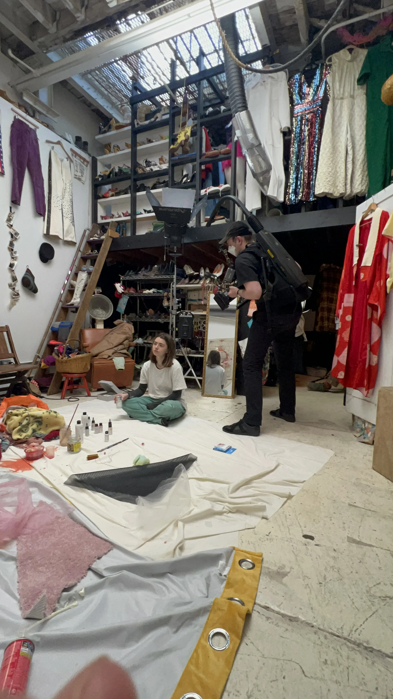
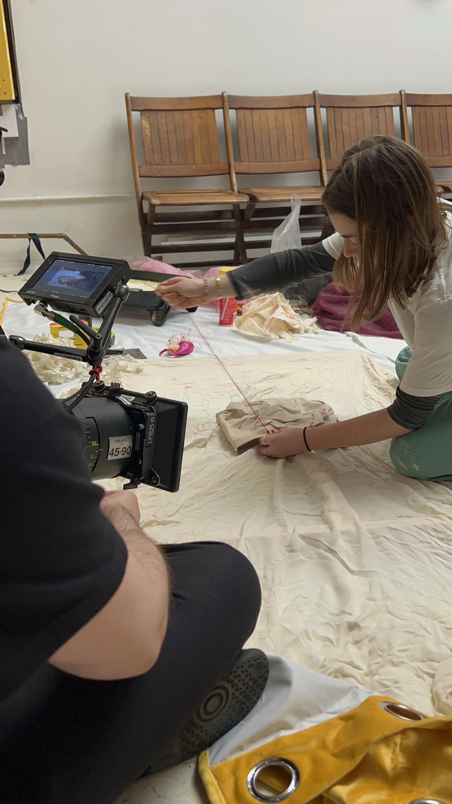
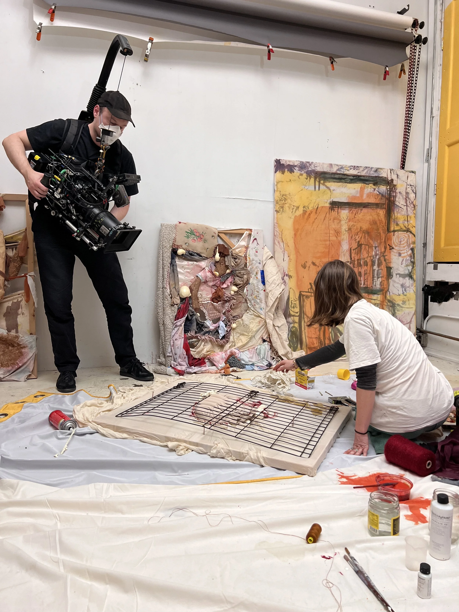
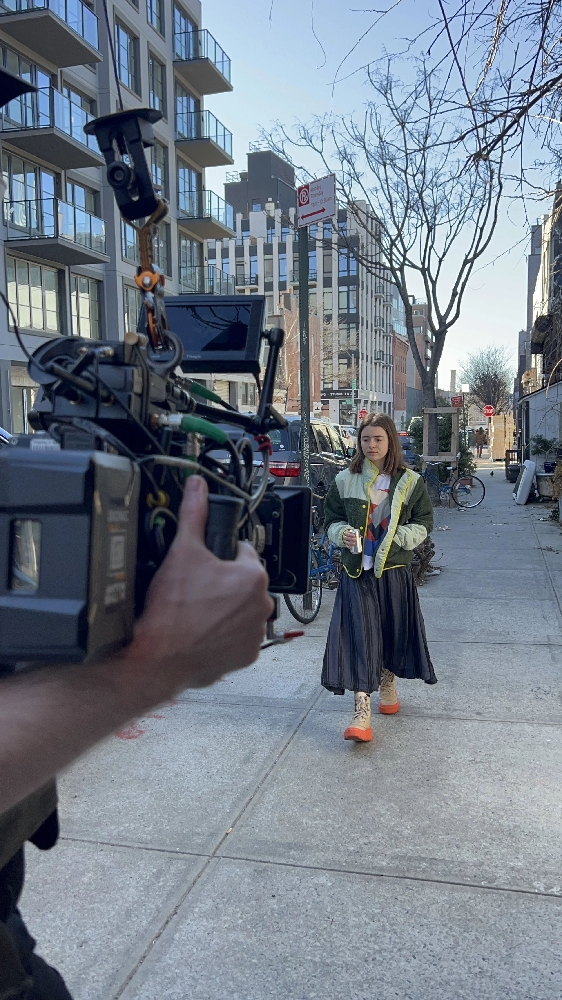
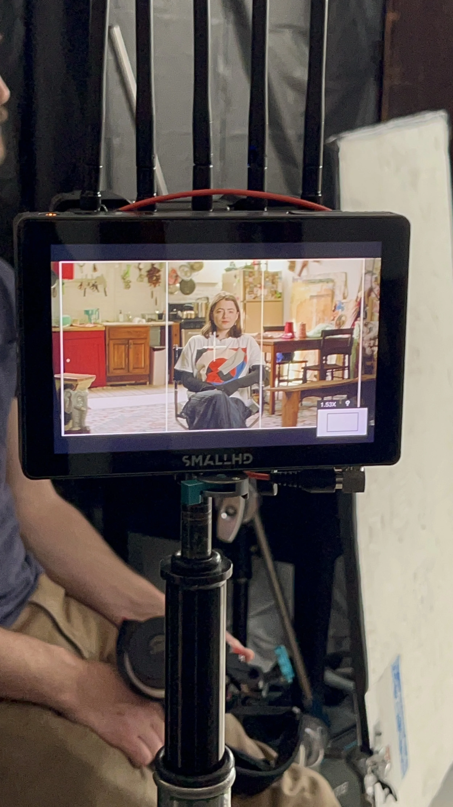
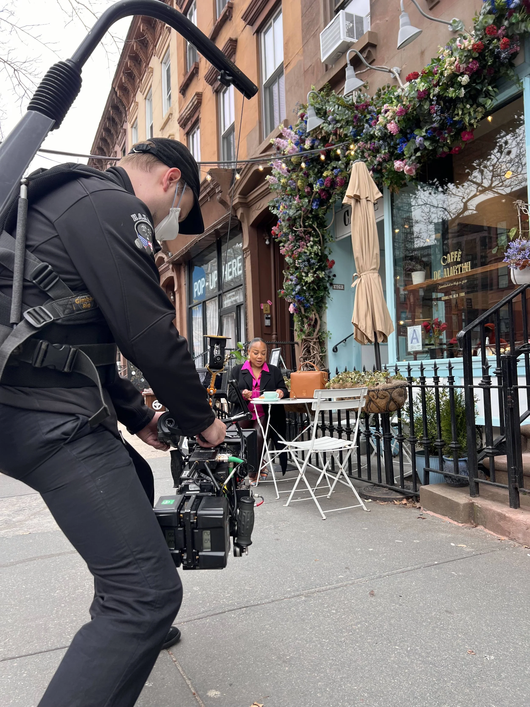
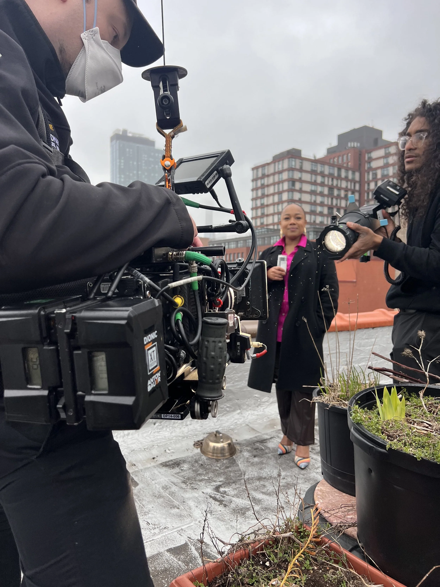
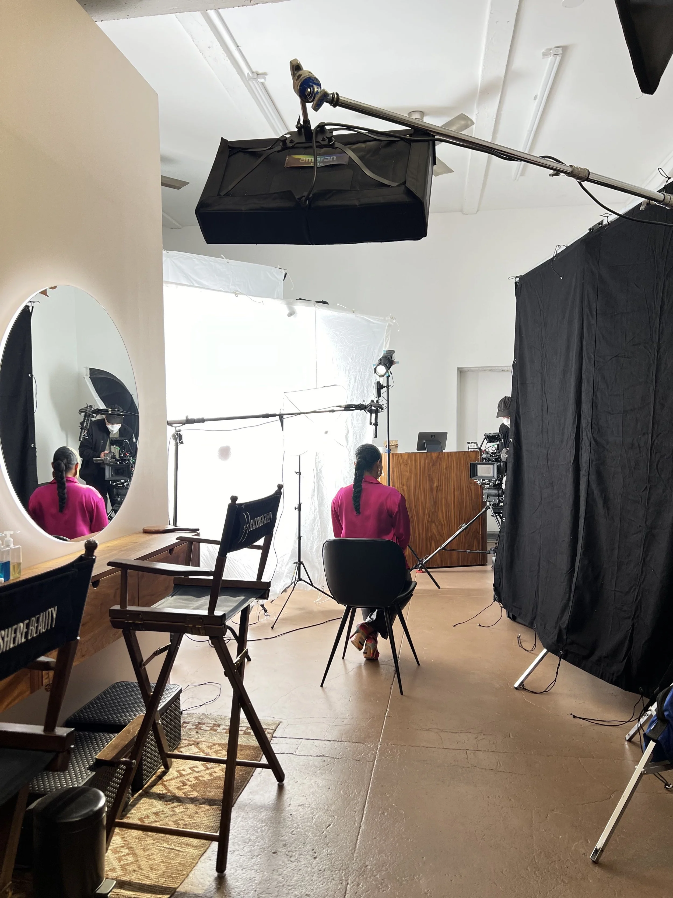
Brand Identity ブランドアイデンティティ
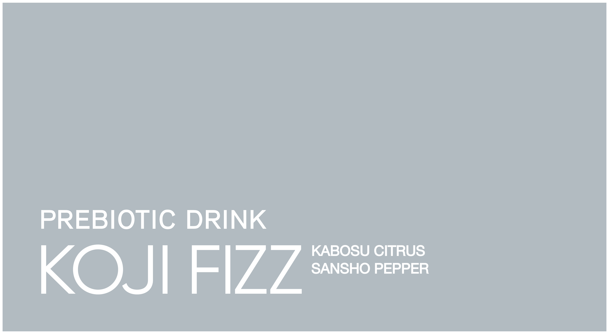
Creative Team クリエイティブチーム
Morinaga & Co.